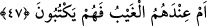

yükümlülük”tür. Arapçada “mağram”, “insanın herhangi bir kusuru olmaksızın malına
gelen zarar” demektir. “Muskalûn” kelimesi, “ağır bir yük altında tutulmak”
anlamınadır. Buna göre âyete şöyle mânâ verilebilir: “Yoksa sen onlardan bir ücret
istiyorsun da bu yüzden ağır bir borç altında kaldıklarından dolayı mı senden yüz
çeviriyorlar?” Bir başka ifâdeyle; sen onlardan dünyevî bir ücret istiyor değilsin.
Onların ellerinde yüz çevirmelerini ve kaçmalarını haklı gösterecek, sığınabilecekleri
herhangi bir mâzeretleri yoktur.
47. Yahut gaybın bilgisi onların nezdinde de, onlar mı (istedikleri gibi) yazıyorlar?
“Yahut ğaybın bilgisi” yâni levh-i mahfuz veya görünmeyen bilinmeyen şeyler
“onların nezdinde de onlar mı” müminlerle kâfirlerin birbirlerine eşit olacaklarına
dâir verdikleri hükmü “yazıyorlar?” ve bundan dolayı mı senin bilgine ihtiyaç
duymuyorlar.
[51]. Ahmed b. Hanbel, Müsned, IV, 407; Terğib, V, 352.
[52]. Bk. Terğib, V, 370-371.
[53]. Müslim, Salat 215; Nesai, Mevakit 35; Tatbik 78; Tirmizi, Deavat 118; Amed b.
Hanbel, el-Müsned, II, 421.
[54]. Ahmed b. Hanbel, el-Müsned, V, 251, 262.
[55]. Müslim, Salat 225; Ebû Davud, Tatavvu 22; Nesai, Tatbik 79; Ahmed b. Hanbel,
el-Müsned, I, 386, 400, 437, 445, 454.
[56]. Ahmed b. Hanbel, el-Müsned, IV, 145; Münavi, I, 354.